Diferentes Mitologias

Mitologia Grega
A mitologia Grega pode ser definida como uma junção das antigas
crenças religiosas e mitos tradicionais de suas culturas.
Os gregos eram politeístas e acreditavam que seus deuses eram
imortais, apesar de terem sentimentos, qualidades e defeitos como
qualquer ser humano.
Gerações Divinas
Deuses Primordiais
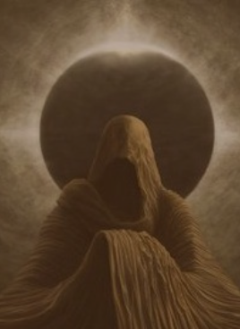
Caos
-

Tártaro
Abismo
-
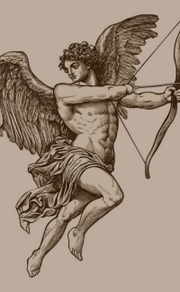
Eros
Atração e criação
-
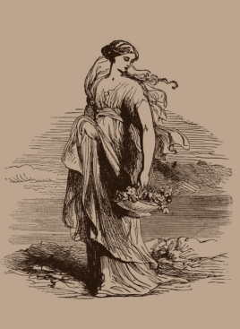
Gaia
Terra
-
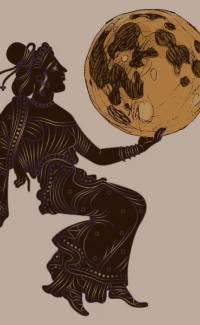
Nyx
Noite
-

Érebo
Escuridão
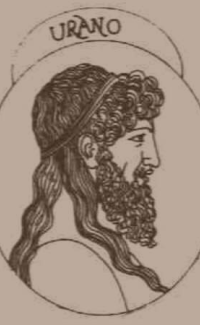
Urano
(filho de Gaia)
Céu
Os deuses primordiais foram as primeiras entidades a existir e representavam os elementos fundamentais do universo. Segundo a mitologia grega, tudo começou com Caos, o vazio primordial. A partir dele surgiram outras divindades, como Gaia, Tártaro, Eros, Nix e Érebo. Gaia deu origem a Urano, que se tornou seu companheiro. Dessa união nasceram diversas criaturas poderosas, incluindo os Titãs. Os deuses primordiais não governavam o mundo como os olímpicos, mas eram responsáveis pela existência e pela organização inicial do cosmos.
Os Titãs
Segunda geração divina
-
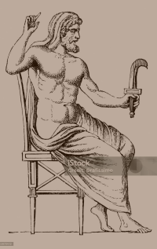
Cronos
Deus do tempo
-
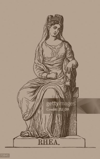
Reia
Deusa da maternidade
-
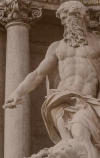
Oceano
Deus dos mares
-
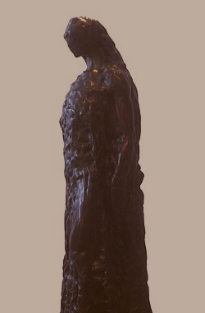
Hipérion
Deus do fogo
-
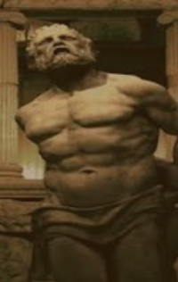
Jápeto
Deus da mortalidade
-
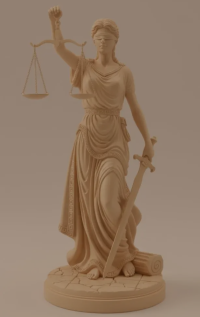
Têmis
Deusa da Justiça
Urano temia seus filhos e os mantinha aprisionados. Revoltada, Gaia ajudou Cronos a derrubar o pai. Após essa vitória, Cronos tornou-se o governante do universo. Porém, uma profecia dizia que ele também seria destronado por um de seus filhos. Para evitar isso, Cronos passou a engolir cada filho que nascia. Reia conseguiu salvar seu filho mais novo, Zeus, escondendo-o. Quando adulto, Zeus retornou para enfrentar Cronos e libertar seus irmãos, iniciando a guerra que marcou a passagem para a terceira geração divina.
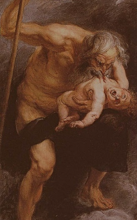
Os Deuses Olímpicos
Terceira geração divina
-

Zeus
Deus dos trovões
-
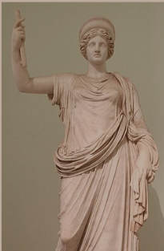
Hera
Deusa do casamento
-
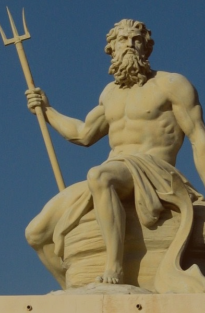
Poseidon
Deus dos mares
-
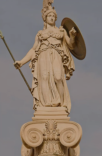
Atena
Deusa da sabedoria
-

Ares
Deus da guerra
-
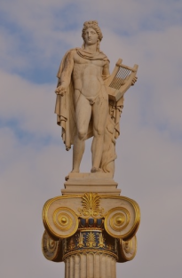
Apolo
Deus da luz
-
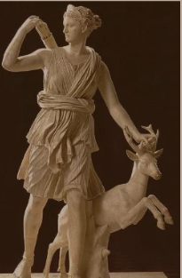
Ártemis
Deusa da caça
-
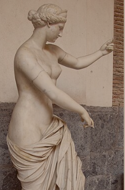
Afrodite
Deusa do amor
-

Hermes
Deus do comércio
-
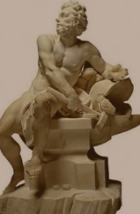
Hefesto
Deus da forja
-
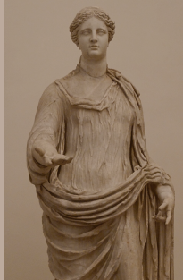
Deméter
Deusa da agricultura
-
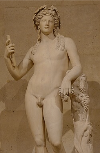
Dionísio
Deus das festas e da vinicultura
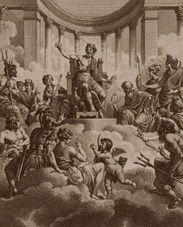
Os deuses olímpicos formam a terceira e mais famosa geração da mitologia grega. Eles receberam esse nome porque viviam no Monte Olimpo, a montanha considerada a morada dos deuses. Após uma grande guerra chamada Titanomaquia, Zeus e seus irmãos derrotaram os Titãs. Depois da vitória, os três principais irmãos dividiram o domínio do universo: Zeus tornou-se o governante dos céus, Poseidon recebeu os mares e Hades passou a governar o mundo dos mortos.